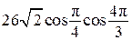

Авторский разбор и аудит предварительны; внешней экспертизы нет.
Модель автора: claude-opus-5-5 (opus; effort=low); в основных частотах: True ·
Впишите правильный ответ.
Найдите значение выражения 
КЭС: 1.5 Синус, косинус и тангенс числового аргумента. Арксинус, арккосинус, арктангенс числового аргумента; 1.8 Преобразование выражений
-13
| ID / вход | Действие | Результат | Локальные KC |
|---|---|---|---|
| s1 · condition | Найти табличное значение cos(π/4) | cos(π/4)=√2/2 | kc1 |
| s2 · condition | Найти cos(4π/3) через формулу приведения: 4π/3=π+π/3, угол в III четверти, косинус отрицателен | cos(4π/3)=-cos(π/3)=-1/2 | kc2, kc1 |
| s3 · condition, s1, s2 | Подставить значения и вычислить произведение | 26√2·(√2/2)·(-1/2)=-13 | kc3 |
[
{
"id": "m1",
"name": "Вычисление значений тригонометрических функций и подстановка",
"step_ids": [
"s1",
"s2",
"s3"
]
}
]Вход: стандартный угол (0, π/6, π/4, π/3, π/2). Операция: указать точное значение sin/cos/tg по таблице. Граница: только стандартные углы первой четверти.
{
"local_kc_id": "kc1",
"status": "new_candidate",
"catalog_kc_id": null,
"evidence": [
{
"ref": "step:s1:action",
"quote": "Найти табличное значение cos(π/4)"
},
{
"ref": "step:s1:result",
"quote": "cos(π/4)=√2/2"
},
{
"ref": "step:s2:result",
"quote": "-cos(π/3)=-1/2"
}
],
"context_refs": [
"image:assets/3f95291559dd455e5e6f714c.gif"
],
"alternatives_checked": [
{
"catalog_kc_id": "literal_6308771d01a6",
"reason": "Подстановка аргумента в установленную формулу функции; не описывает знание точного значения тригонометрической функции стандартного угла."
},
{
"catalog_kc_id": "literal_be5764a81415",
"reason": "Отношение сторон в прямоугольном треугольнике; здесь треугольника нет, значение берётся по таблице."
},
{
"catalog_kc_id": "literal_cc7d68a38f29",
"reason": "Тождественные преобразования (приведение, двойной угол), а не вычисление значения стандартного угла."
}
],
"rationale": "Операция: указать точное значение cos для стандартного угла первой четверти (π/4 в s1, π/3 внутри s2). В каталоге нет узла о табличных значениях тригонометрических функций.",
"proposal": {
"name": "Определять табличное значение тригонометрической функции стандартного угла",
"definition": "Для угла 0, π/6, π/4, π/3, π/2 указать точное значение sin, cos или tg (при определённости). Приведение угла из других четвертей — отдельное действие."
},
"blocking": false,
"issue_ids": []
}Вход: угол вида πk/2±α. Операция: свести значение тригонометрической функции к функции острого угла, определив знак по четверти и смену функции. Граница: углы, представимые через кратные π/2 и стандартный острый угол.
{
"local_kc_id": "kc2",
"status": "uncertain",
"catalog_kc_id": null,
"evidence": [
{
"ref": "step:s2:action",
"quote": "Найти cos(4π/3) через формулу приведения: 4π/3=π+π/3, угол в III четверти, косинус отрицателен"
},
{
"ref": "step:s2:result",
"quote": "cos(4π/3)=-cos(π/3)"
}
],
"context_refs": [
"image:assets/3f95291559dd455e5e6f714c.gif"
],
"alternatives_checked": [
{
"catalog_kc_id": "literal_cc7d68a38f29",
"reason": "Включает формулы приведения, но определение шире (вместе с двойным углом) и описывает сведение выражения к функции одного аргумента; дублируется узлом literal_55d5a6d9eb3c."
},
{
"catalog_kc_id": "literal_55d5a6d9eb3c",
"reason": "Почти идентичное определение (приведение и двойной угол); нет основания выбрать один из двух перекрывающихся узлов."
},
{
"catalog_kc_id": "literal_534413234aa8",
"reason": "Выбор знака по четверти при извлечении корня из квадрата функции; здесь знак определяется в формуле приведения, а не при извлечении корня."
}
],
"rationale": "Наблюдаемое действие — применение формулы приведения cos(π+α)=-cos α с определением знака по четверти. Оно является компонентом двух перекрывающихся узлов каталога (literal_cc7d68a38f29 и literal_55d5a6d9eb3c), которые к тому же объединяют приведение и двойной угол; по правилу о двух перекрывающихся определениях ставится uncertain.",
"proposal": null,
"blocking": false,
"issue_ids": [
"i1"
]
}Вход: числовое выражение с корнями и дробями. Операция: перемножить, используя (√a)²=a, и упростить. Граница: произведения без сложения корней.
{
"local_kc_id": "kc3",
"status": "new_candidate",
"catalog_kc_id": null,
"evidence": [
{
"ref": "step:s3:action",
"quote": "Подставить значения и вычислить произведение"
},
{
"ref": "step:s3:result",
"quote": "26√2·(√2/2)·(-1/2)=-13"
}
],
"context_refs": [
"image:assets/3f95291559dd455e5e6f714c.gif",
"step:s1:result",
"step:s2:result"
],
"alternatives_checked": [
{
"catalog_kc_id": "power_laws",
"reason": "Законы степеней положительного основания; здесь умножение корней √2·√2=2 без явного степенного преобразования."
},
{
"catalog_kc_id": "literal_6308771d01a6",
"reason": "Вычисление значения функции по формуле; здесь числовое выражение без функции."
},
{
"catalog_kc_id": "physical_formula_substitution",
"reason": "Подстановка величин в прикладную формулу с единицами; не относится к числовому выражению."
}
],
"rationale": "Операция: подставить найденные значения и перемножить числа с иррациональным множителем, используя √2·√2=2 (26·2/2·(-1/2)=-13). Подходящего узла о действиях с корнями в каталоге нет. Действие близко к рутинной арифметике; выделение отдельного KC — предложение, возможно его стоит объединить с более общим узлом преобразования числовых выражений с корнями.",
"proposal": {
"name": "Вычислять произведение числовых выражений с квадратными корнями",
"definition": "Перемножить числовые множители с корнями и дробями, используя √a·√a=a при a≥0, и упростить до числа. Сложение подобных корней и рационализация знаменателя не входят."
},
"blocking": false,
"issue_ids": []
}[]
[
{
"id": "i1",
"kind": "boundary",
"refs": [
"step:s2:action"
],
"description": "Шаг s2 объединяет формулу приведения (kc2) и табличное значение cos(π/3) (kc1); разметка корректна, но в каталоге формулы приведения представлены только в двух дублирующих узлах, смешанных с формулой двойного угла, что не даёт однозначного match.",
"blocking": false,
"affected_local_kc_ids": [
"kc2"
]
}
]{
"author_path": "data/annotation/runs/2026-11-09-fipi-team-bogdan108-next-100/raw/author/9017F9.json",
"auditor_path": "data/annotation/runs/2026-11-09-fipi-team-bogdan108-next-100/raw/auditor/9017F9.json",
"accepted_after_review": null
}